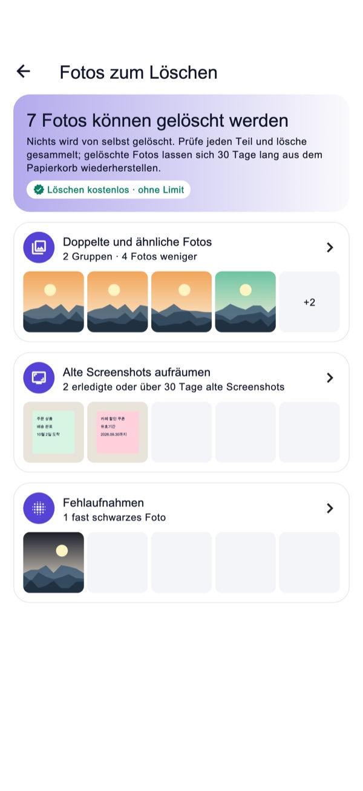

Doppelte Fotos löschen
1. Was gesammelt wird
„Fotos zum Löschen“ im Tab Fotos sammelt drei Arten von Fotos.
• Doppelte und ähnliche Fotos: dasselbe Foto zweimal oder Serienaufnahmen
• Alte Screenshots: älter als 30 Tage. Screenshots mit Quittungen, Kontodaten oder Passwörtern werden nicht vorausgewählt.
• Fehlaufnahmen: versehentlich fast schwarz aufgenommen

2. So löschst du
1. Aus jeder Gruppe bleibt das beste Foto, die anderen sind vorausgewählt.
2. Tippe auf ein Foto, um es groß zu sehen und das behaltene zu ändern.
3. Wenn alles passt, tippe auf „… Fotos löschen“.
3. Aus Versehen gelöscht?
Gelöschte Fotos lassen sich 30 Tage lang unter „Zuletzt gelöscht“ auf deinem Handy wiederherstellen. Wo das nicht geht, sagt dir die App vor dem Löschen Bescheid.